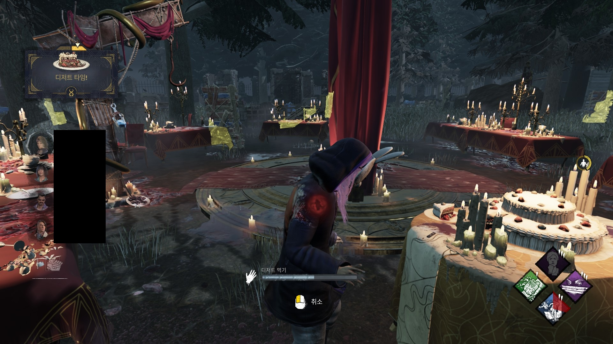
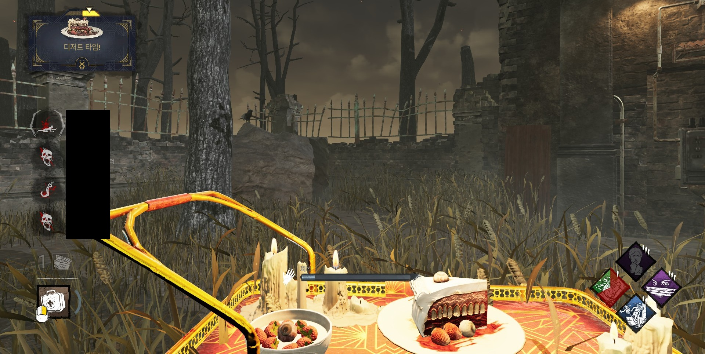
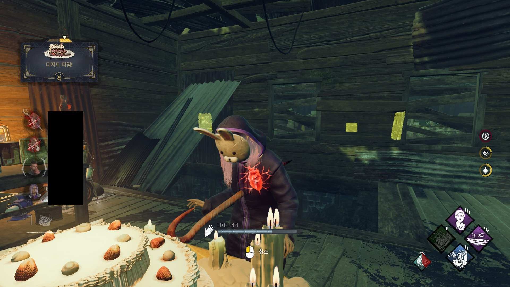
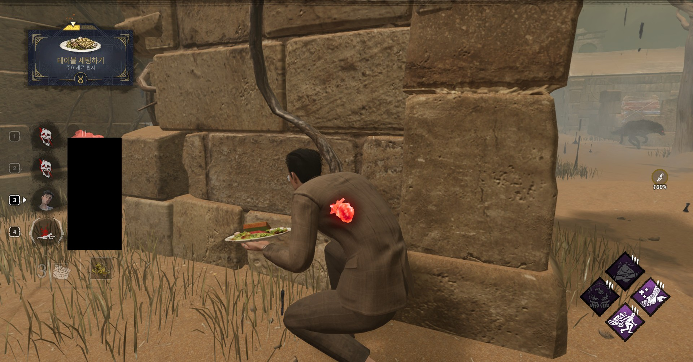
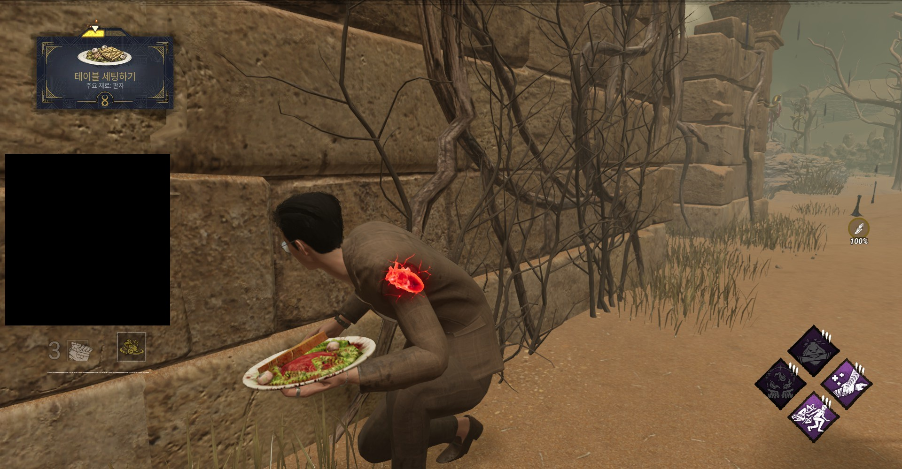
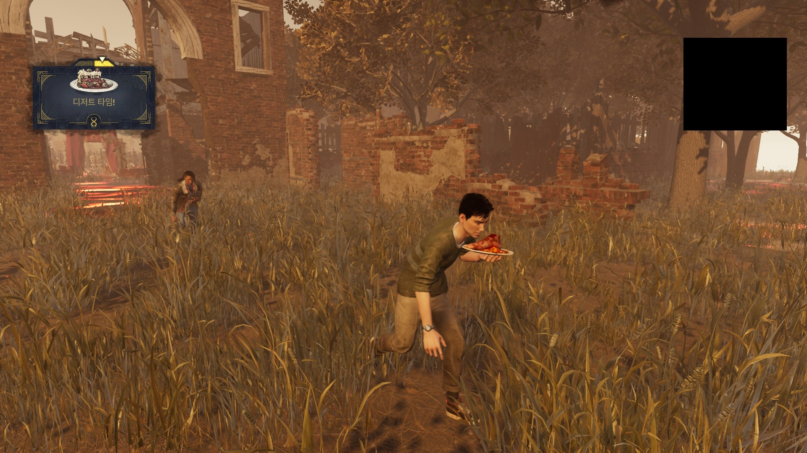

연회의 메뉴 갤러리
검은 연회의 메뉴와 분위기를 실제 인게임 장면으로 만나보세요.
Menu Gallery
오늘의 메뉴 3종
쫄깃한 족발
꾸덕한 크리미 파스타
흰 곰팡이 까망베르 치즈 구이
Atmosphere
연회의 분위기


(달콤한 케이크)

(금강산도 식후경, 제이슨의 못에 꽂혀도 디저트는 못 참습니다.)



(그의 만찬을 쫓아오는 다른 참가자)